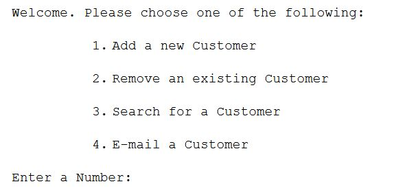

Linux Shell Scripting
**PLEASE NOTE: I've updated Week 2: Assessment Details with a video that will complement the Assessment Details file** - to be uploaded to Moodle on or before 11:55pm Sunday 18th November (week 9)
So, if the user enters 1 then send them to the ./AddCust
This should be file #2 that you will have created which will automatically create a file called CustomerDetails, if it doesn't already exist... you might consider using re-direction in your command
CustomerDetails is therefore file #3 that the script will create at the beginning to enter the first record
If the user enters 2 then send them to the ./RemCust (so this is file #4 that you will have created)
If the user enters 3 then send them to the ./FindCust (so this is file #5 that you will have created)
Finally a user will be allowed to email customer(s) and you can choose how you would like to approach this... see the next lab
All menu options should loop until a user chooses to exit
mailmail joe@bloggs.com -s "Message for Joe"You then type your mail and end it by typing CTRL+D on a line of its own
You’ll need to install mailutils first if not already installed:
sudo apt-get install mailutils
(choose local only option)This facility means that you will be only allowed send test emails and not emails via the internet so this is perfectly OK. An email will not actually be sent out. You can test that the email was sent via your mail command This is sufficient for the purpose of this assessment i.e. if you tested sending an email to your own email myemail@gmail.com, it is OK that you will not see this email in your own gmail account.
You might consider setting a variable to be equal to a find (recall grep) of the appropriate person in a particular file where the records are stored to begin with... what next?? Maybe pipe the output to an awk command? Why?
You might consider something like this to email the person with a particular message:
echo $message | mail -s $subject $emailaddressThis is only one of MANY approaches that you might have taken to searching for a particular person/group you want to send an email to and then emailing them... what I'm looking for is your command of the language